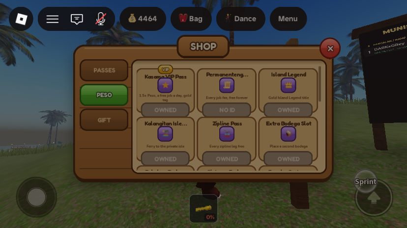
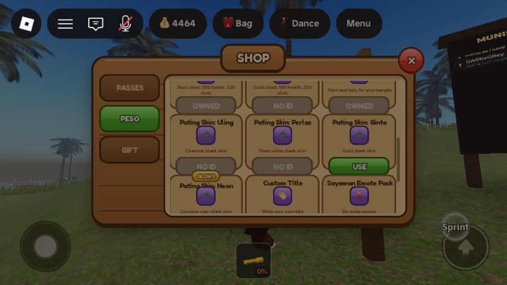
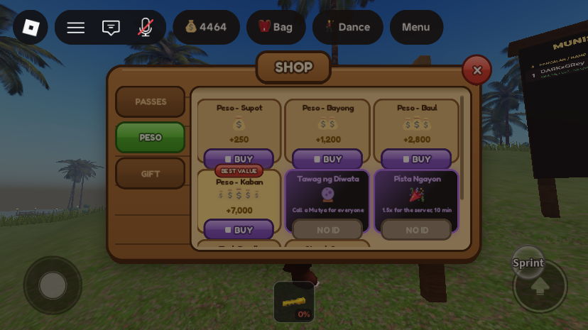
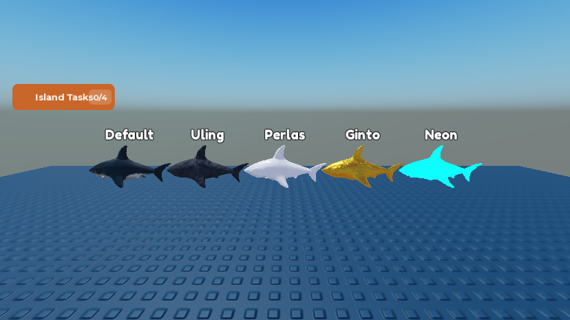
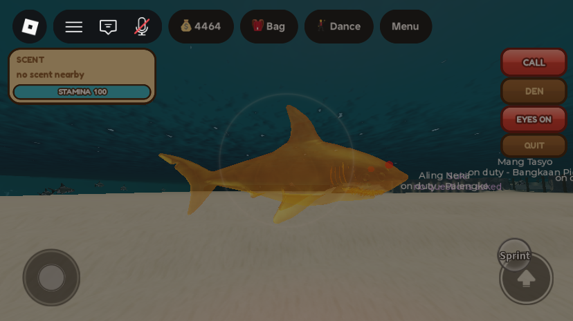
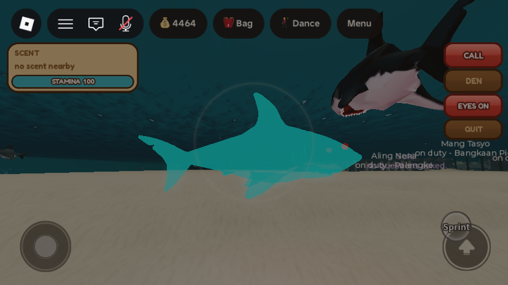

Phase 9: gamepasses, products and the website
What was asked
- Original request: "remove and add new gamepass, remove old one that no longer will work on the new game mechanics, add ones that you think player will buy that will earn us real money".
- The roadmap's Phase 9 (accepted with every recommendation on 29 Sep): retire, repurpose and add passes and developer products, then refresh the website and the ad scripts. Its table: Kasama VIP 2× → 1.5× plus a free job fee a day and a gold nametag (announced in-game); Stone Bodega renamed Bakal na Bodega; Bangkero Speed cut; Instant Restock likely cut; the Sigla Shells packs renamed to Peso and resized to the new wage; the three coded id-0 gear passes created; and new: Pating skins, Permanenteng Lisensya, Ginto na Bodega, Tawag ng Diwata and Pista Ngayon. Not sold, by design: a Lung Coral speed-up (sells air) or a paid Mutya hint (pay-to-win). Pet colours wait for pets (Phase 5b).
- This session was "continue phase 9". Nothing of Phase 9 had been built before it.
What changed
1. The catalogue now drives the shops
MonetizationConfigis the one list. Each entry now also has ablurb,glyph,order, optionalribbon/neon,shop = false(sold at the Palengke instead) andretired(off sale, id kept so a receipt Roblox is still retrying is honoured).MonetizationBootstrappublishes it asReplicatedStorage.ShopCatalog(Passes/Productsfolders, one Configuration each withName, Blurb, Glyph, Order, Ribbon, Neon, Shop, Peso, OnSale, Retired; no ids). The Island Shop and the Palengke's UPGRADES tab build their tiles from it.- Something without a real id never shows to players. Before, the shop had four hand-copied pass tiles, one of them Bangkero Speed (id 0, so BUY did nothing), and the Palengke showed Malakas na Sulo and Malaking Lambat, also id 0. In Studio, id-0 entries still show with a greyed NO ID button so you can see where they'll appear.
- The shop now lists every pass that is on sale (it used to show only four of twelve), and ownership shows reliably.
GamePassService.ApplyPerkssetsOwns_<key>for every pass. The old shop read an attribute named after the key, which was never set for most passes, so OWNED never appeared. - The purchase remotes refuse anything not on sale (
onSale: real id and not retired).



2. Kasama VIP: 1.5× with perks added back
ShellsMultiplieris nowGamePassService.VIP_MULTIPLIER = 1.5(was 2). 2× undid the job-fee and day-wage maths from Phase 1.- One free job clearance a day (Philippine calendar day).
RoleServiceskips the fee and writesprofile.VipFreeJobDay. The board shows TAKE FREE while it's unused (new attributeFreeJobFee="vip"), and the claim line says "Today's free Kasama VIP clearance used." The player's very first job is free anyway and doesn't spend it. - Gold VIP nametag (
TitleTagService): VIP never hides a title. An earned cave title or a custom title shows in VIP gold, and an empty tag reads "Kasama VIP". Island Legend's gold words still win. - Kept: free zipline legs, the VIP bangka tier. The old description promised "a second bodega slot" and a dance emote that the code never gave; the new description only lists what it does.
- Told once in-game: a VIP owner's next join shows an island notice and a toast explaining the change (
profile.VipNoticeSeen).
3. Retired and cut
| What | Why | How |
|---|---|---|
| Bangkero Speed pass | Never created (id 0); a faster bangka mattered less than the rest. | Removed from the config, ApplyPerks (BoatSpeedBoost), the admin labels and BoatRentalService (SPEED_PASS_MULTIPLIER). Every bangka has one speed. |
| Instant Restock (25 R$, id 3712371226) | It was selling nothing. Since Phase 1 only the Tindero restocks crates, and no script reads the InstantRestockCharges it grants. | retired = true: off the shop; a retried receipt still clears. |
| Bilao Box (79 R$, id 3712370973) | None of its 26 cosmetics is ever shown on a character or placed (the 29 Sep review's top risk). The roadmap's table didn't list it; it's retired because it no longer works, which the original request asked for. | retired = true. The shop's ODDS tab hides while it's off sale. The odds table and receipt code stay, in case it returns with cosmetics that work. |
4. Resized and renamed
- Peso packs (keys still
ShellsSmall…, since the ledger and analytics group by them), sized to a wage of about 600 Peso per island day:
That is 5.1, 6.0, 7.0 and 7.8 Peso per Robux. The amount granted comes from the game, so the new sizes apply as soon as it's published; the Dashboard names and descriptions still say "Sigla Shells".Robux Was Now Name in game 49 100 250 Peso - Supot 199 550 1,200 Peso - Bayong 399 1,200 2,800 Peso - Baul 899 3,000 7,000 Peso - Kaban (BEST VALUE) - Stone Bodega is "Bakal na Bodega" in the game since Phase 7; the Dashboard name still needs changing.
- Task Reroll (25) and Streak Saver (49) had real ids and working grants, but nothing in the game offered them. They're now in the shop's PESO tab.
- The shop's wording is Peso throughout (tab PESO, "Send Peso to a friend", money-bag icons instead of shells).
5. New passes (id 0 until created)
| Key | Name | Suggested R$ | What it does |
|---|---|---|---|
PermanentLicense | Permanenteng Lisensya | 249 | No job clearance, ever (RoleService; FreeJobFee = "license"). The 5-minute wait between jobs and the caps still apply. |
PatingUling | Pating Skin: Uling | 149 | Looks only. SharkPlayerService.dressSkin paints the shark: it drops the SurfaceAppearance and sets material and colour from ItemConfig.PatingSkins (Uling: Basalt charcoal; Perlas: Glass pearl-white; Ginto: Foil gold, 0.25 reflectance; Neon: Neon cyan plus a PointLight, which prey can see coming). Owners pick a skin with the shop tile's USE / IN USE button (remote SetPatingSkin; saved as profile.PatingSkin, mirrored to the PatingSkin attribute). A skin whose pass isn't owned is ignored, and a change applies to a shark that is already out. |
PatingPerlas | Pating Skin: Perlas | 149 | |
PatingGinto | Pating Skin: Ginto | 199 | |
PatingNeon | Pating Skin: Neon | 249 | |
GintoBodega | Ginto na Bodega | 299 | Already wired in Phase 7 (gold chest straight away). Now has shop text. |
BrightBeam, MalakingLambat, DiverBag | Malakas na Sulo, Malaking Lambat, Kaban ng Dagat | 129 / 179 / 149 | Already coded (brighter beam, 100-stud net, biggest bag). The roadmap chose to create them. They sell on the Palengke's UPGRADES tab (shop = false), and Kaban ng Dagat got a tile there too (ItemConfig.PassItems). Their "flagged" notes were replaced by the roadmap decision. |
The roadmap named Great White, Hammerhead, Butanding and Neon skins. Recolouring the existing textured mesh barely shows (the tint only reaches the white belly; tried first). The current shark already reads as a great white, and a hammerhead or spotted whale shark needs its own mesh or texture. So the four skins are the ones a material change can do well. The lineup below was rendered from the real mesh in Studio.

SharkAssets.SharkMesh (Studio, noon light).

6. New developer products (id 0 until created)
- Tawag ng Diwata (
TawagNgDiwata, 99): calls a Mutya for the whole server. NewServerStorage.MutyaSummonBindableFunction inRareFindService. With nothing live it surfaces at once ("Name called on the Diwata!", then the usual surfaced notice with the area). With one live, it goes to the front of the queue and surfaces 5 s after that one is claimed or dissolves; the rest of the queue keeps its 20-minute gaps behind it. Everyone hears the area at the same moment as the buyer, so it buys the server a Mutya, not a head start. If the summon fails the receipt stays unprocessed, so nobody is charged. - Pista Ngayon (
PistaNgayon, 149):FiestaEventService.StartPista(600)adds +0.5 to everyone's earned-Peso multiplier for 10 minutes (another purchase adds 10 minutes, capped at an hour ahead; mirrored toworkspace.PistaBoostUntil), and puts 1,000 Peso into the Kaban ng Barangay (new fund group "Pista Ngayon"). The island is told who threw it. It stacks by addition: a VIP on a Saturday in a Pista gets 1.5 × (1.5 + 0.5 + the month's bonus). Bought Peso packs are never multiplied. - Product grants moved into one
grant()function, shared by the receipt handler and a new Studio-only hook,ServerStorage.DebugProduct:Fire(player, productKey), which runs the real grant with no Robux and no id.
7. The website
D:\GitHubRepo\IslaMarahuyo\index.html caught up with Phases 1 to 9 (not pushed; git isn't installed):
- Hero chip 5 → 6 jobs; the surface cards mention job gear, glowsticks by the piece and the free first job.
- Cave: Lung Corals are carried home and cured; "It caves in every day" became five to ten cave-ins with a warning and a dig-out; the Kristal card became a Mutya card (the Kristal stays in Zone 04); "Five deep runs" became six with green/red stone markers.
- Pating: dash and backup merged into one card; a new "Galit on bait" card; Shark Poison 100 → 250.
- Jobs: "Six jobs", the clearance fee and free first job, Tambay as the no-job state, the Nars's 15% bill, the Tindero's crates and 450 cap, and a new Maninisid card. The "Out of air?" card moved under the grid as a line.
- Law: the four bodega chests, and only a Tambay carries the axe. Rhythm: Gabay added to the tasks card.
- Passes: VIP's new perks, Stone Bodega → Bakal na Bodega, and the shelf line now lists the Peso packs, Task Reroll and Streak Saver. The new passes are not on the site: add them once they're on sale.
- Checked in the browser at phone width (375 px): no sideways overflow. The pane was too narrow for a useful desktop screenshot.
Dashboard to-dos (only the owner can do these)
- Create the passes and put each id in
ServerScriptService.MonetizationConfig.GamePasses:PermanentLicense,PatingUling,PatingPerlas,PatingGinto,PatingNeon,GintoBodega,BrightBeam,MalakingLambat,DiverBag. Names, descriptions and suggested prices are in each entry. - Create the developer products and put their ids in
DeveloperProducts:TawagNgDiwata(99),PistaNgayon(149). - Rename on the Dashboard: "Stone Bodega" → "Bakal na Bodega"; the four "Sigla Shells" products → the Peso names and new amounts above; Kasama VIP's description to the new one.
- Take Instant Restock and Bilao Box off sale on the Dashboard as well (the game already never prompts them).
- Broadcast License, Audio Customizer and Photo FX were kept. The roadmap said to check their sales before removing any; that needs the Dashboard.
All changes
| Instance | Change | Detail |
|---|---|---|
ServerScriptService.MonetizationConfig | edit | Header on the catalogue/shop rule; display fields on every entry; VIP text; new PermanentLicense, four Pating* skins; BangkeroSpeed removed; gear passes shop = false with the roadmap note; packs renamed/resized with order; InstantRestock, BilaoBox retired; new TawagNgDiwata, PistaNgayon (seconds = 600, fund = 1000); Task Reroll and Streak Saver get shop text. |
ServerScriptService.MonetizationBootstrap | edit | onSale() guard on both purchase remotes; grant() with the two new products; VIP change notice on join; publishes ReplicatedStorage.ShopCatalog; Studio hook DebugProduct. |
ServerScriptService.GamePassService | edit | VIP_MULTIPLIER = 1.5; Owns_<key>, KasamaVIP, PermanentLicense attributes; BoatSpeedBoost removed; perk list comment. |
ServerScriptService.RoleService | edit | phDay, feeWaiver, M.RefreshFreeFee; the waiver in Claim and its fee lines; refresh on join, on Owns_KasamaVIP/Owns_PermanentLicense changes, and at the Philippine day change. |
StarterPlayer.StarterPlayerScripts.RoleHud | edit | TAKE FREE also when FreeJobFee is set. |
ServerScriptService.TitleTagService | edit | VIP_GOLD; VIP colours earned/custom titles gold, or shows "Kasama VIP"; listens to KasamaVIP. |
ServerScriptService.SharkPlayerService | edit | dressSkin() called from embody; in Init: remote SetPatingSkin, load PatingSkin on join. |
ReplicatedStorage.ItemConfig | edit | PatingSkins, PatingSkin(key), PatingSkinForPass(passKey); DiverBag added to PassItems. |
ServerScriptService.RareFindService | edit | ServerStorage.MutyaSummon (SUMMON_AFTER 5 s); in tick, a summoned head surfaces 5 s after the live one goes, and republishes. |
ServerScriptService.FiestaEventService | edit | PISTA_BONUS 0.5, PISTA_MAX_SECONDS 3600, StartPista, PistaSecondsLeft; GetMultiplier and the status text include it; "Shells" → "Peso" in the text. |
ServerScriptService.CommunityFundService | edit | Fund group "Pista Ngayon". |
ServerScriptService.CurrencyService | edit | Comment only (1.5×, Peso). |
ServerScriptService.BoatRentalService | edit | Speed-pass multiplier removed. |
ServerScriptService.AdminService | edit | Test-pass switch labels: VIP text, BangkeroSpeed out; PermanentLicense, four skins, BrightBeam, MalakingLambat, DiverBag in. BoatSpeed dropped from player info. |
StarterGui.ShopUI.ShopController | edit | Tiles from ShopCatalog; OWNED from Owns_; skin USE / IN USE; NO ID in Studio; Peso naming and icons; ODDS tab only while the Bilao Box is on sale. |
StarterPlayer.StarterPlayerScripts.GearHud | edit | Palengke pass tiles hidden unless on sale (NO ID in Studio); ownership from Owns_; Kaban ng Dagat glyph. |
ReplicatedStorage.ShopCatalog | new | Folder built at runtime by MonetizationBootstrap. |
ServerStorage.MutyaSummon, ServerStorage.DebugProduct, ReplicatedStorage.Remotes.SetPatingSkin | new | Made at runtime (DebugProduct in Studio only). |
New attributes: player Owns_<passKey>, KasamaVIP, PermanentLicense, FreeJobFee, PatingSkin; workspace PistaBoostUntil. New profile fields: VipFreeJobDay, VipNoticeSeen, PatingSkin. No world or terrain edits; nothing was retired to _Retired (the retired products are config flags).
How it was tested
Every edited script passed a loadstring compile check in Edit. Then one solo playtest as MERS_Cov2, which owns most real passes, including Kasama VIP, ended by a kick from the server. No script errors in the output.
- Catalogue:
ShopCatalogpublished 31 entries (21 passes, 10 products). OnSale was true for the 12 created passes and 6 products, and false for the id-0 and retired ones. - VIP: on join
ShellsMultiplier = 1.5,FreeJobFee = "vip". Taking the Tindero job: "You are the Tindero. Today's free Kasama VIP clearance used." andFreeJobFeecleared. - Pista Ngayon (via DebugProduct): fund 0 → 1,000, boost 600 s; a second purchase took the fund to 2,000 and the boost to 1,199 s.
- Tawag ng Diwata: with nothing live, an Epic Mutya surfaced at once. A second call while it was live queued one about 6 minutes out, behind the live one. Expiring the live one made the queued one surface about 5 s later. That test showed the dropdown's countdown wasn't republished at that moment; fixed after the playtest (compile-checked, not re-run).
- Skins: with the Ginto test pass on,
SetPatingSkin("Ginto")was accepted and"Neon"(not owned) was refused. As a Pating (DebugPatingJob) the mesh was Foil gold with no SurfaceAppearance and working eyes. Switching to Neon mid-job repainted it with its light. Screenshots above. - Shop: opened by script for the screenshots above. OWNED, NO ID, USE and the pack amounts render; the ODDS tab is hidden.
Unverified, known issues, and what to revert
- No real purchase was made. Product grants ran through the Studio hook, which calls the same
grant()as the receipt handler. Pass prompts can't be tested until the ids exist. - Not seen: the gold VIP nametag on screen (the test account's tag read "AFK" during the test and wasn't looked at; the colour logic was checked by reading the code); the one-time VIP notice (the test account's profile got
VipNoticeSeenon this join, so it won't show again there); Permanenteng Lisensya (no id, and the admin switch wasn't used for it); the Pista's effect on a real earning (by code review:CurrencyServicereads the sameFiestaEventService); the new Palengke Kaban ng Dagat tile. - Test account changes that persist:
VipFreeJobDayis today, so its free VIP clearance is used until the Philippine day changes.VipNoticeSeenis set.PatingSkinwas cleared, and both test-pass switches (Ginto, Neon) were turned off. The two test Pista purchases put 2,000 Peso into that server's fund only, which ended with the playtest. - Hammerhead and Butanding skins from the roadmap weren't made (they need their own mesh or texture); the four material skins stand in.
- The ad scripts (in the 29 Sep review artifact) weren't touched. The Pating ad could show the skins once they're on sale.
- Long pass names are cut short on the shop tiles ("Permanenteng...", "Kalangitan Isle..."), the same truncation as before.
- No quick-test values were added.